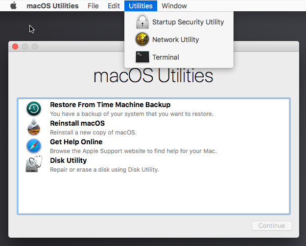
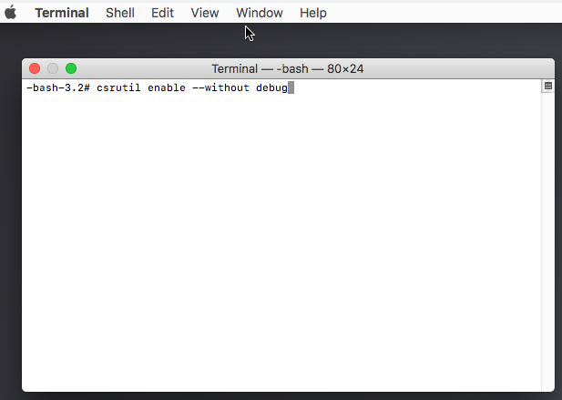

I Hope You Never Do This
Now that ebe is using lldb which comes with the Xcode command line tools, there is no need to change SIP to use ebe. Having typed this up, I am leaving it here. I may need to read it some day. I hope to forget about SIP.
Coping with System Integrity Protection
The Mac OS X System Integrity Protection software is designed to protect your computer by preventing some things like writing to system files and running a debugger. (It doesn't interfere with lldb when installed as part of XCode, but it does prevent gdb from working.) To change the settings for SIP requires booting in Recovery Mode, using a terminal window there to issue a csrutil command. This command will not work in normal more since it would modify part of the operating system files.
Booting in Recovery Mode
Restart your Mac and press the Command and R keys and hold them until you enter the recovery mode.
I had troubles since I used a PC keyboard in a VirtualBox VM. I had to use the System Preferences window to change Keyboard preferences. The Keyboard settings window has a Modifier Keys button which I used to switch the Command and Option keys. This allowed me to use Alt-R instead of Command-R. Unfortunately this only got me to the boot menu.
If Command-R gets you to the boot menu instead of the recovery mode, then you can get there from the boot menu. If Command-R gets you to a different screen perhaps you can skip forward to Recovery Mode.
Recovery Mode
Below you see the system after it has booted to Recovery mode. I have selected the "Utilities" option at the top. Using the "Terminal" option will start a terminal session where you will be able to use csrutil to disable part or all of the SIP protections.
Using csrutil
Below is the terminal window in the Recovery mode with the csrutil command needed for debugging. Unfortunately on my VirtualBox VM the keyboard gave strange symbols. I eventually ran into the use of Alt-L (Command-L) to fix that.
csrutil enable --without debug
When you have completed the csrutil command you can reboot the computer to normal mode and SIP will not interfere with gdb.